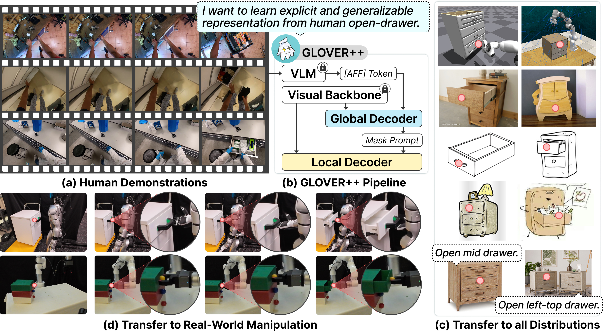
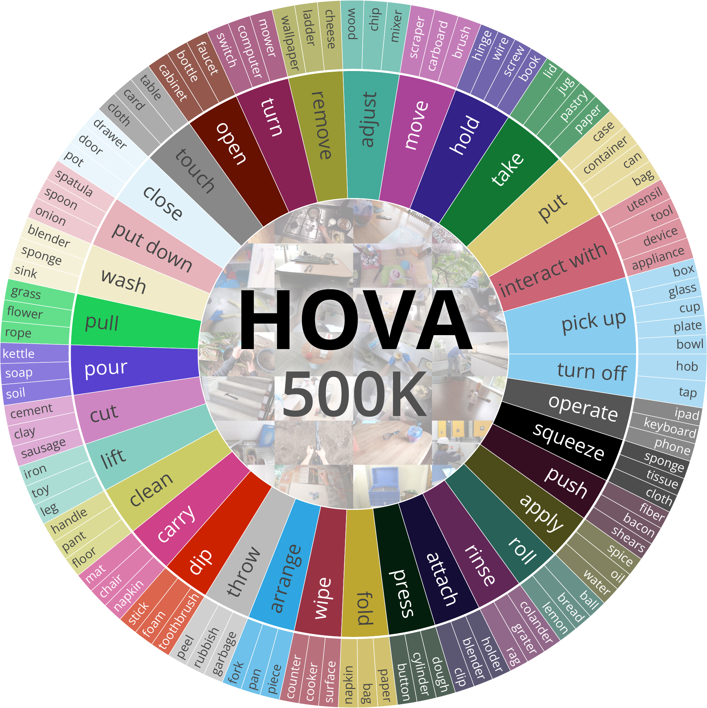
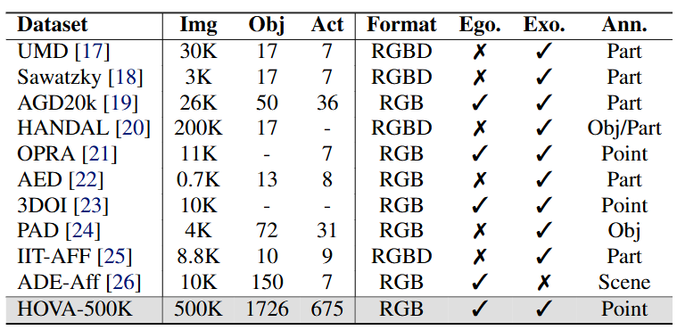
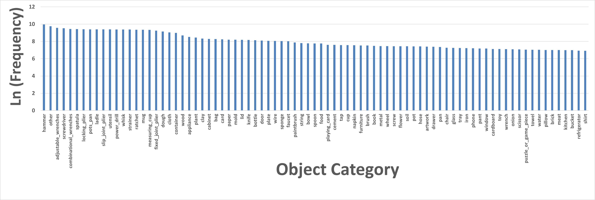
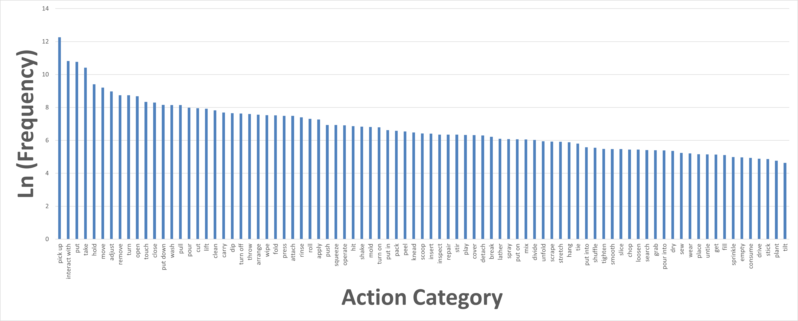
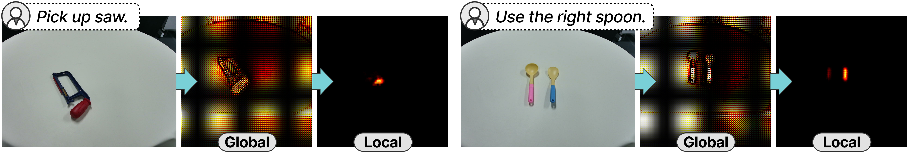
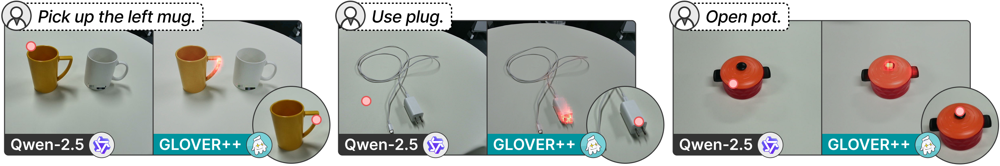
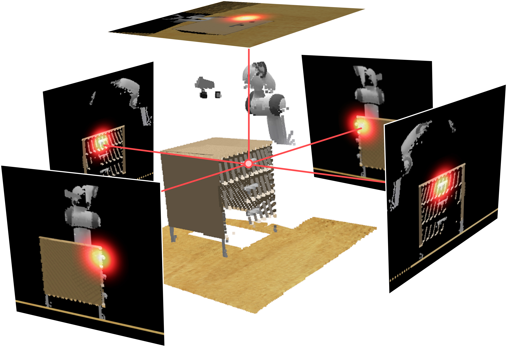
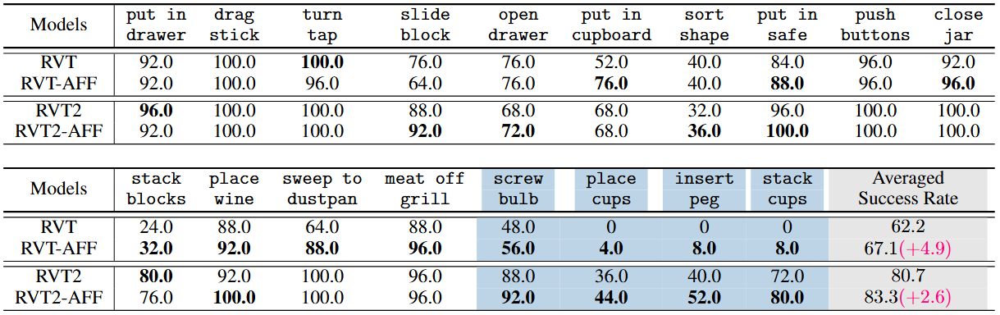
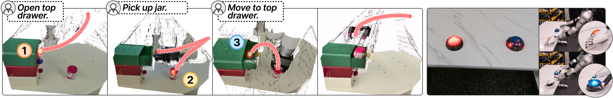

Abstract
Learning manipulation skills from human demonstration videos offers a promising path toward generalizable and interpretable robotic intelligence—particularly through the lens of actionable affordances. However, transferring such knowledge remains challenging due to: 1) a lack of large-scale datasets with precise affordance annotations, and 2) insufficient exploration of affordances in diverse manipulation contexts. To address these gaps, we introduce HOVA-500K, a large-scale, affordance-annotated dataset comprising 500,000 images across 1,726 object categories and 675 actions. We also release a standardized benchmarking suite for multi-modal affordance reasoning. Built upon HOVA-500K, we present GLOVER++, a global-to-local affordance training framework that effectively transfers actionable affordance knowledge from human demonstrations to downstream open-vocabulary reasoning tasks. GLOVER++ achieves state-of-the-art results on the HOVA-500K benchmark and demonstrates strong generalization across diverse downstream robotic manipulation tasks. By explicitly modeling actionable affordances, GLOVER++ facilitates robust transfer across scenes, modalities, and tasks. We hope that HOVA-500K and the GLOVER++ framework will serve as valuable resources for bridging the gap between human demonstrations and robotic manipulation capabilities.
Overview of GLOVER++
(a) GLOVER++ aims to learn generalizable affordance representation from human behaviors (e.g. open drawer). (b) The training pipeline of GLOVER++. We adopt a global-to-local decoding policy to balance global semantic decoding and local affordance decoding. (c) GLOVER++ is capable of transferring affordable knowledge to all kinds of distributions (simulation, sketch, cartoon etc). in an open-vocabulary manner. It also presents strong spatial reasoning ability as shown in the bottom line. (d) By lifting inferred affordable points into 3D space, GLOVER++ provides perceptive awareness for real-world manipulation tasks. (Red dots represent affordable points.)
HOVA-500K Dataset
Fig. 1 shows the distribution of primary action categories (>1,000 samples) and related objects in HOVA-500K. Fig. 2 shows the comparisons between HOVA-500K and previous datasets. "Format" "Ann." "Ego." and "Exo." refer to the image format, egocentric, exocentric, and annotation type, respectively. Our HOVA-500K annotates the action & object categories, and the affordance with more precise affordable points. Fig. 3 are some examples of HOVA-500K, showing action, object category, and Gaussian-distributed mask of affordable point.

Fig. 1

Fig. 2

Fig. 3
Fig. 4 shows the distribution of primary object categories in HOVA-500K (>1000 data samples). Fig.5 shows the distribution of primary action categories in HOVA-500K (>100 data samples)

Fig. 4

Fig. 5
Global-to-Local Affordance Tuning
This is the visualization of the decoded features by the global and local decoder (the intensity of highlight scale with interest of regions). We can observe that the integration of the local decoder effectively eliminates the background noise from the global decoding.

Affordance Reasoning 3D Results
Please drag to change the camera view.
This in-browser interactive 3D scene is enabled by Viser.
Comparison with Qwen-2.5-VL
We aim to unleash the potential of the affordance representation in diverse downstream tasks. Compared with Qwen-2.5-VL, a powerful VLM with strong spatial understanding, GLOVER++ provides more physically plausible and functionally grounded affordance predictions.

Zero-Shot Manipulation
By projecting affordance prediction into 3D space, GLOVER++ can perform zero-shot manipulation tasks in both the simulated and real-world environments. We show some qualitative demonstrations. The reasoned argmax affordance point from GLOVER++ is shown in the video.
Imitation Learning
Left: GLOVER++ serves as a perceptual module for the VLM planner to complete long-horizon tasks. Right: GLOVER++ enables bimanual tasks by reasoning affordances for both left and right hands with spatial relationships.

Fig. 1

Fig. 2
Extended Capabilities
Left: GLOVER++ serves as a perceptual module for the VLM planner to complete long-horizon tasks. Right: GLOVER++ enables bimanual tasks by reasoning affordances for both left and right hands with spatial relationships.

Long-horizon Manipulation with VLM planner
GLOVER++ can serve as a perceptual backbone for a high-level VLM planner. We integrate it with Qwen-2.5-VL, which decomposes long-horizon instructions into subgoals. As shown in left figure, Qwen-2.5-VL split the task "Put the jar into the top drawer" into steps like "Open top drawer", "Pick up jar", "Move to top drawer" etc., and invoking GLOVER++ when affordance grounding is required (①, ②, ③). This hybrid system combines semantic planning and precise affordance prediction, enabling robust multi-stage manipulation
Bimanual Manipulation
Thanks to its spatial reasoning capabilities, GLOVER++ can interpret positional cues (e.g., "left/right", "top/bottom") to enable dual-arm affordance reasoning. It generates graspable regions for both arms while maintaining spatial separation and feasibility (right figure). We execute dual-arm motions using obstacle-avoidance IK on the Unitree G1 humanoid robot.
BibTeX
@article{ma2025glover++,
title={GLOVER++: Unleashing the Potential of Affordance Learning from Human Behaviors for Robotic
Manipulation},
author={Ma, Teli and Zheng, Jia and Wang, Zifan and Gao, Ziyao and Zhou, Jiaming and Liang, Junwei},
journal={arXiv preprint arXiv:2505.11865},
year={2025}
}